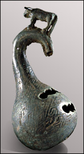

Sui xian
Sui xian was an important area which was the focus of much conflict. The rulers of Cai were exiled to Sui xian in the fifth century B.C. The tomb of a nobleman was found at Sui xian which dated from about 433 B.C. The tomb of the Marquis Yi of Zeng contained a wide variety of objects including lacquers, jades, and objects made of gold, leather, bamboo and bronze.

Bronze musical instrument |